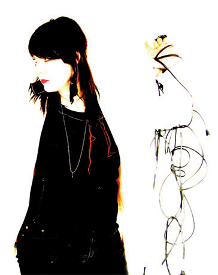
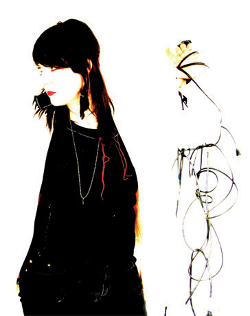

Katherine grew up in Berkeley, CA bombarded by artistic influences.
Her father Paul Sawyer (a political activist and poet written about in Tom Wolfe's Electric Kool-Aid Acid Test)
taught her how to play the saxophone which she used to out-shout the world.
There were "a lot of great crazy people in and out of the house", visionaries
like Country Joe McDonald, Ken Kesey (we miss you Ken!), Allen Ginsberg and Jerry Garcia
(who once gave her a guitar

string she now cherishes).
Katherine grew up in Berkeley, CA bombarded by artistic influences.
Her father Paul Sawyer (a political activist and poet written about in Tom Wolfe's Electric Kool-Aid Acid Test)
taught her how to play the saxophone which she used to out-shout the world.
There were "a lot of great crazy people in and out of the house", visionaries
like Country Joe McDonald, Ken Kesey (we miss you Ken!), Allen Ginsberg and Jerry Garcia
(who once gave her a guitar

string she now cherishes).
At 9 years old, Katherine traded dog-washing services for her
first guitar. She started writing songs when she was 16 and began pursuing a solo career
in her early 20's before she and Stev formed Wire Graffiti.